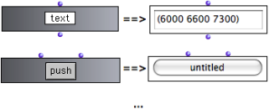
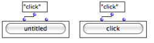
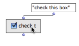

General Features
To access dialog Items, go to Classes / Kernel / Interface Boxes / in the OM menus.
Displaying the Dialog Items
The actual interface of a dialog box is displayed via the miniview. To display a miniview, select a box and press |  Diplaying the interface for the classes TEXT-BOX and BUTTON |
 A button-box before and after the evaluation : "click" is a default text argument. | Most interface boxes have a display text, generally as a first input. The text connected to the input is displayed on the interface when the box is evaluated (if not in locked mode). |
To change the value of the "text" argument :
click or
SHIFTclick on the first input to edit it – don't forget to validateselect and evaluate the box : press
v.
Selecting Boxes
 | Once their miniview is displayed, interface boxes cannot be selected with a mouse click, due to the nature of the interface. |
To select a box, click on the border of the box, or drag the mouse over the whole box. The box can then be resized or evaluated as usual.
Items can be also moved and resized without the mouse, to a certain extent :
use the
→arrows keys – useSHIFTto go fasterpress
ito restore the initial size.
An easy way to select and move/resize the interface box is to temporarily hide their contenst with m.